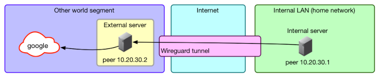
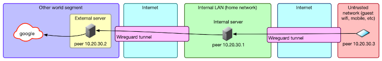
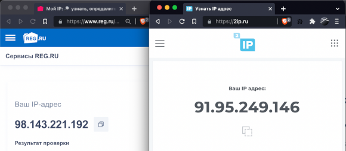
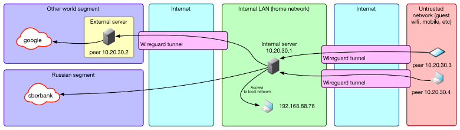

Забавная ситуация: сайтов и сервисов, доступных только через VPN, все больше, но при этом многие российские компании закрывают доступ из-за границы. В результате приходится целыми днями теребить ползунки «вкл-выкл», что утомительно. Я расскажу, как с помощью магии маршрутов и WireGuard, решить эту проблему и сделать «умный» VPN, который не надо отключать.
Если ты пользуешься VPN, то и сам наверняка сталкиваешься с блокировками зарубежного трафика. К примеру, могут не открываться pochta.ru, leroymerlin.ru, rt.ru, avito.ru.
Каждый с этим борется как может. Поэтому мы сейчас попробуем «включать VPN чуть-чуть».
Заодно чуть улучшим качество связи с локальными ресурсами: необходимость таскать трафик сначала до VPN вне страны, а потом обратно до сервера внутри нее драматично сказывается если не на скорости, то на задержке точно. Даже на проводном интернете пинг в 4 мс до Яндекса легко превращается в 190 мс, а на мобильном интернете — из 80 мс в 240 мс. Дополнительный хоп внутри страны чуть ухудшит дело, но далеко не так драматично.
Делать все мы будем на основе WireGuard — это относительно новая (разрабатывается с 2016 года, в отличие от OpenVPN и IPsec: первый — это двухтысячные, а второй еще раньше) технология VPN. Создал ее, по сути, один человек — zx2c4, которого в миру зовут Джейсоном Доненфельдом. Плюсы WG — скорость (особенно для Linux, где он может работать как модуль ядра, начиная с Kernel 5.6, и Windows, где модуль для ядра выпустили около недели назад), низкие задержки, современная криптография и простая настройка и использование конечным юзером.
Ах да, еще UDP. UDP для туннелей — это хорошо, потому что у TCP уже есть механизмы, которые позволяют ему работать на неидеальных соединениях, а UDP представляет собой именно такое соединение. А когда ты засовываешь TCP в TCP, то отказываешься от большей части этих механизмов (инкапсулированный TCP-пакет будет гарантированно доставлен другой стороне, хотя протокол допускает недоставку), но все еще несешь весь оверхед вида «хендшейк соединения для отправки хендшейка».
Не говоря уж о том, что инкапсулировать UDP в TCP — ничуть не лучшая идея, потому что сразу рушит все предположения всяких скайпов о том, что лучше пропустить пару пакетов, чем уменьшить задержку: каждый UDP-пакет в этом случае будет принудительно послан заново и доставлен корректно, не считаясь с затратами времени.
Особенно для одинокого пользователя-хакера приятна работа с шифрованием: нет необходимости ни в сертификатах и удостоверяющих центрах, ни в логинах-паролях, все, что нужно, — обменяться публичными ключами с пиром, с которым ты хочешь установить соединение. Для больших компаний это, конечно, будет скорее минусом, как и то, что WG — это только базовая часть полноценной большой инфраструктуры VPN. Но именно WireGuard использовали, к примеру, в Cloudflare для своего WARP, правда, написав его собственную реализацию — boringtun.
Еще один минус WG — то, что трафик не обфусцирован и глубокая инспекция пакетов (DPI) выявит и позволит заблокировать такое соединение (не говоря уж о блокировке UDP совсем, что почти не мешает работать с вебом, но гарантированно ломает WireGuard). Для скрытия трафика рекомендуется использовать специализированное ПО — Cloak, Obfsproxy, Shadowsocks, Stunnel, SoftEther, SSTP или, в конце концов, простой SSH. Часть из этих инструментов может работать совместно с WG, а часть способна его заменять в качестве инструмента стеганографии: WG изначально создавался под скорость и криптографическую защищенность.
Если очень упрощать, ключи работают следующим образом: у нас есть закрытый (приватный) ключ, из которого можно сгенерировать открытый, или публичный. Наоборот, из открытого ключа получить закрытый мы никак не можем. Затем мы шифруем с помощью закрытого ключа какую-то строку, а при помощи открытого расшифруем ее и тем самым убедимся, что у собеседника точно есть закрытый ключ, а значит, он тот, за кого себя выдает. Таким образом, мы можем без проблем передавать открытый ключ — он всего лишь позволяет проверить подлинность автора, но не притвориться им.
Это как в SSH — публичный ключ лежит на сервере, где его потеря — небольшая беда: все, что сможет сделать с ним злоумышленник, — это положить его на свой сервер, чтобы ты мог подключиться к нему с помощью закрытого ключа.
Так вот, в WG на первом этапе подключения каждая сторона с помощью зашифрованного приватным ключом сообщения доказывает собеседнику, что она именно она: это проверяется публичным ключом.
Второй этап — создание с помощью этих ключей и матана симметричных ключей для шифрования самого трафика. Благодаря тому что расшифровать зашифрованное публичным ключом нельзя без приватного, мы сможем создать ключ для симметричного шифрования и отправить его по защищенному каналу. Этот шаг необходим потому, что симметричное шифрование гораздо менее ресурсоемкая операция, а минус у нее только один: необходимо синхронизировать ключ между сторонами, при том что перехват ключа третьей стороной ведет к возможности расшифровки трафика.
Но эта проблема решается с помощью асимметричной схемы. Это называется протокол Диффи-Хеллмана — способ защищенного получения общего секретного ключа. В WG используется ECDH — вариация Диффи — Хеллмана на эллиптических кривых. Первые два этапа в терминах WG называются рукопожатием или хендшейком.
Затем симметричные ключи используются для шифрования трафика. Раз в две минуты происходит новое рукопожатие и сессионные симметричные ключи меняются.
Разумеется, в реальности все немного сложнее: например, отправляются не сами ключи, а сгенерированные на их основе эфемерные ключи, которые удаляются сразу после операции. Заинтересовавшихся подробностями отправляю к краткому описанию на сайте WireGuard.
Мы же перейдем к более практическим действиям.
Один сервер будет внутри страны — через него трафик пойдет на локальные ресурсы, а второй — за границей. Дальше я их буду называть local и external.
Идеально, если local будет в твоей домашней сети, потому что при этом трафик на внешние ресурсы не отличается от твоего домашнего трафика. Но для этого нужен какой-то хост дома, белый IP и возможность пробросить порт. У меня это виртуалка на домашнем сервере, но, наверное, подойдет и Raspberry Pi или аналогичный одноплатник.
Вариант с одноплатником я не тестировал и не уверен, что он сработает. Raspberry Pi придется маршрутизировать весь трафик с устройств и держать в памяти около 11 тысяч маршрутов; ресурсов на это может не хватить.
Если дома хоста нет, можно взять любой сервер у хостера VDS. Увы, некоторые сайты блокируют подсети хостеров, опасаясь ботов, так что это менее предпочтительный вариант.
А вот внешнюю машину можно арендовать и у хостера. К примеру, у RUVDS и VDSina есть зарубежные площадки. А можно выбрать иностранного хостера, если найдешь способ оплачивать его услуги. Например, я использую исландский 1984.hosting, созданный специально для параноиков.
Считаем, что на обоих серверах у нас Debian 11.
Ставим нужные нам пакеты:
apt update && apt install -y wireguard iptables ipcalc qrencode curl jq traceroute dnsutils ufw
Включаем перенаправление трафика: в этом случае сервер, получив пакет, который не предназначается ни одному из его IP-адресов, не отбросит его, а попытается перенаправить в соответствии со своими маршрутами.
echo "net.ipv4.ip_forward=1" >> /etc/sysctl.conf
echo "net.ipv4.conf.all.forwarding=1" >> /etc/sysctl.conf
sysctl -p /etc/sysctl.conf
Опционально (но очень удобно) сразу поменять hostname обоих серверов, чтобы не запутаться, где какая консоль:
hostnamectl set-hostname trickster-internal
hostnamectl set-hostname trickster-external
Для начала генерируем ключи. Запускаем два раза wg genkey и получаем два приватных ключа:
root@trikster-internal:~# wg genkey
kOd3FVBggwpjD3AlZKXUxNTzJT0+f3MJdUdR8n6ZBn8=
root@trikster-internal:~# wg genkey
6CCRP42JiTObyf64Vo0BcqsX6vptsqOU+MKUslUun28=
Утилита wg genkey не делает ничего волшебного, это просто аналог чего-то в таком духе (генерируем 32 байта случайных значений и представляем их в виде Base64):
echo $RANDOM | md5sum | head -c 32 | base64
Только более случайное. Не стоит использовать $RANDOM в серьезных применениях.
Создаем два конфига. Один на internal:
[Interface]
Address = 10.20.30.1/32
ListenPort = 17968
PrivateKey = kOd3FVBggwpjD3AlZKXUxNTzJT0+f3MJdUdR8n6ZBn8=
PostUp = iptables -t nat -A POSTROUTING -o `ip route | awk '/default/ {print $5; exit}'` -j MASQUERADE
PostUp = ip rule add from `ip addr show $(ip route | awk '/default/ { print $5 }') | grep "inet" | grep -v "inet6" | head -n 1 | awk '/inet/ {print $2}' | awk -F/ '{print $1}'` table main
PostDown = iptables -t nat -D POSTROUTING -o `ip route | awk '/default/ {print $5; exit}'` -j MASQUERADE
PostDown = ip rule del from `ip addr show $(ip route | awk '/default/ { print $5 }') | grep "inet" | grep -v "inet6" | head -n 1 | awk '/inet/ {print $2}' | awk -F/ '{print $1}'` table main
Второй на external:
[Interface]
Address=10.20.30.2/32
PrivateKey=6CCRP42JiTObyf64Vo0BcqsX6vptsqOU+MKUslUun28=
PostUp = iptables -t nat -A POSTROUTING -o `ip route | awk '/default/ {print $5; exit}'` -j MASQUERADE
PostDown = iptables -t nat -D POSTROUTING -o `ip route | awk '/default/ {print $5; exit}'` -j MASQUERADE
Секция [Interface] — это настройки конкретного сетевого интерфейса WireGuard, того, что будет виден в ip a. Название интерфейса берется из названия текущего файла конфигурации. У одного интерфейса всегда одна ключевая пара: у пиров этого интерфейса одинаковый публичный ключ.
Но никто не мешает, если хочется, сделать для каждого пира отдельный конфиг и отдельный интерфейс (правда, на сотнях клиентов это будет неудобно).
Управляются интерфейсы обычно при помощи утилиты wg-quick:
wg-quick down wg-external и wg-quick up wg-external
Утилита wg-quick — это на самом деле 400 строк на баше, которые автоматизируют часто используемые вещи, например установку маршрутов. Наличие туннеля само по себе не дает ничего, кроме защищенной «трубы», за которой находится другой пир. Чтобы твой запрос в браузере попал в интерфейс, системе надо явно сказать: «Маршрутизируй, пожалуйста, пакеты с таким-то адресом назначения вот в этот сетевой интерфейс».
Именно этим занимается wg-quick. Ну еще и настройкой адресов DNS, указанных в конфиге, установкой MTU и еще парой вещей. Но ничего сложного в этом нет, достаточно сделать cat /usr/bin/wg-quick, чтобы посмотреть на эту логику, и, если надо, повторить то же самое руками.
Кроме публичных и приватных ключей, есть еще опция PresharedKey, которая обеспечивает дополнительное шифрование симметричным шифром. Ключ можно сгенерировать, например, командой wg genpsk и добавить в опцию PresharedKey в секциях Peer на обоих пирах. Если не использовать эту опцию, нагрузка по шифрованию и расшифровке не вырастет: когда ключ не указан, используется нулевое значение ключа.
А чтобы по-настоящему обеспечить постквантовую безопасность (невозможность расшифровки данных квантовыми компьютерами), разработчики рекомендуют дополнительный внешний квантово-устойчивый механизм хендшейка, например SIDH, который Microsoft пиарит именно в таком контексте. Созданный им общий ключ можно использовать в качестве PresharedKey.
Заклинания в PostUp достаточно просты. Вот команда для подстановки имени сетевого интерфейса, куда по умолчанию выполняется маршрутизация:
ip route | awk '/default/ {print $5; exit}'
Как правило, это интерфейс, обращенный к провайдеру или роутеру.
Таким образом, страшная команда превращается в такую:
iptables -t nat -A POSTROUTING -o eth0 -j MASQUERADE
Здесь происходит включение NAT в режиме маскарада: сервер будет отправлять пришедшие ему пакеты во внешнюю сеть, подменяя адрес отправителя своим, чтобы ответы на эти пакеты тоже приходили ему, а не исходному отправителю.
Вторая команда уже немного сложнее, но она подставляет IP-адрес дефолтного маршрута.
`ip addr show $(ip route | awk '/default/ { print $5 }') | grep "inet" | grep -v "inet6" | head -n 1 | awk '/inet/ {print $2}' | awk -F/ '{print $1}'`
Сначала мы получаем, как и выше, сетевой интерфейс маршрута по умолчанию:
root@:~# ip route | awk '/default/ { print $5 }'
enp1s0
Потом данные о состоянии этого интерфейса:
root@:~# ip addr show $(ip route | awk '/default/ { print $5 }') | grep "inet" | grep -v "inet6" | head -n 1
inet 192.168.88.70/24 brd 192.168.88.255 scope global dynamic enp1s0
И дальше вытаскиваем оттуда адрес, в данном случае 192.168.88.70.
Команда становится такой:
ip rule add from 95.93.219.123 table main
Это необходимо для сервера internal, потому что иначе при активации маршрута 0.0.0.0/0 он начинает пересылать ответы на пакеты, приходящие ему на внешние адреса через туннель WG. Сервер на том конце, конечно, пересылает их по назначению, но тут уже не готов отправитель пакета: он присылает что-то на внешний адрес сервера internal, а ответ ему приходит с external.
Естественно, при включенном rp_filter пакет отбрасывается. В этом случае сервер перестает быть доступным, например по SSH снаружи. К нему придется коннектиться только по внутреннему IP WireGuard. Отключать rp_filter — это стрелять из пушки по воробьям, а вот дополнительное правило исправляет ситуацию.
Я намеренно иду по шагам, а не не привожу сразу готовые конфиги, потому что хочу показать механизм создания конфигов в ручном режиме. В свое время я генерировал конфиги утилитами типа easy-wg-quick или веб-сервисами, которые спрашивают тебя о названии клиента и красиво показывают QR-код. Это отнюдь не способствует пониманию того, как работает WG на самом деле, и может вызвать проблемы.
Теперь в оба конфига надо добавить секцию Peer, чтобы связать серверы друг с другом.
Генерируем из приватного ключа публичный (вот в wg pubkey как раз и происходит криптомагия):
root@:~# echo "kOd3FVBggwpjD3AlZKXUxNTzJT0+f3MJdUdR8n6ZBn8=" | wg pubkey
MxnOnIlKfSyZyRutnYyoWHb3Izjalgf1t8F1oPJiyyw=
Это публичный ключ сервера internal, его мы помещаем в секцию Peer на external:
[Peer]
PublicKey=MxnOnIlKfSyZyRutnYyoWHb3Izjalgf1t8F1oPJiyyw=
AllowedIPs=10.20.30.0/24
Endpoint=195.2.79.13:17968
PersistentKeepalive=25
Там же, в Endpoint указываем адрес сервера internal и порт, который мы задали в ListenPort.
С AllowedIPs при использовании wg-quick возникает небольшая путаница. Это именно список IP-адресов, с которых мы разрешаем принимать пакеты из туннеля. Если прилетит что-то с другим src, оно будет отброшено.
Утилита wg-quick разумно считает, что, если есть какие-то устройства, которые могут послать пакет, пакеты к этим устройствам надо маршрутизировать туда же, и создает маршруты на эти адреса, указывающие на туннель пира.
В этих примерах AllowedIPs можно читать как «адреса, трафик на которые будет маршрутизироваться в туннель этого пира и с которых пир сможет отправить что-то в туннель». То есть пункт AllowedIPs = 10.20.30.3/32 означает буквально «только запросы на 10.20.30.3 (адрес пира WG) отправлять в туннель» — дать доступ только до машины этого клиента.
Пункт AllowedIPs = 192.168.88.0/24 означает, что при запросе адреса из этой подсети запрос уйдет в туннель клиента, и если у него включен форвардинг и ему доступна эта подсеть, то к ней можно будет получить доступ.
AllowedIPs = 0.0.0.0/0 означает, что в туннель надо маршрутизировать вообще весь трафик. Правда, это не относится к трафику, например, локальной сети: приоритет у маршрута, который создается из маски подсети и адреса шлюза, выше, чем у 0.0.0.0/0. Также маршрут 0.0.0.0/0 перебьют маршруты других пиров, если они будут в конфиге.
В данном случае AllowedIPs=10.20.30.0/24 означает, что трафик с external в подсеть 10.20.30.0–10.20.30.255 будет уходить в туннель к internal. В принципе, особой нужды в этом нет, external у нас исключительно выходная нода. Но вдруг мы как-нибудь захотим зайти оттуда по SSH на какую-нибудь другую машину.
Повторяем генерацию публичного ключа с external:
root@:~# echo "6CCRP42JiTObyf64Vo0BcqsX6vptsqOU+MKUslUun28=" | wg pubkey
FulnUTovyyfgn5kmgPkcj2OjKRFGeLkaTsHtAOy6HW8=
Мы получаем публичный ключ сервера external и помещаем его в секцию Peer сервера internal.
[Peer] #external node
PublicKey = FulnUTovyyfgn5kmgPkcj2OjKRFGeLkaTsHtAOy6HW8=
AllowedIPs = 10.20.30.2/32, 0.0.0.0/0
AllowedIPs тут 10.20.30.2/32, 0.0.0.0/0. Этим мы указываем, что за туннелем находится конкретный IP 10.20.30.2, и, помимо этого, пробрасываем весь трафик, не связанный другими маршрутами, в этот туннель: external у нас основная выходная нода VPN.
Поэтому по умолчанию весь трафик будет направляться через нее, так как зарубежных маршрутов больше, чем российских, и логичнее фильтровать именно российские, а зарубежный трафик пустить по умолчанию через ноду в другой стране.
Итак, два конфига.
[Interface]
Address = 10.20.30.1/32
ListenPort = 17968
PrivateKey = kOd3FVBggwpjD3AlZKXUxNTzJT0+f3MJdUdR8n6ZBn8=
PostUp = iptables -t nat -A POSTROUTING -o `ip route | awk '/default/ {print $5; exit}'` -j MASQUERADE
PostUp = ip rule add from `ip addr show $(ip route | awk '/default/ { print $5 }') | grep "inet" | grep -v "inet6" | head -n 1 | awk '/inet/ {print $2}' | awk -F/ '{print $1}'` table main
PostDown = iptables -t nat -D POSTROUTING -o `ip route | awk '/default/ {print $5; exit}'` -j MASQUERADE
PostDown = ip rule del from `ip addr show $(ip route | awk '/default/ { print $5 }') | grep "inet" | grep -v "inet6" | head -n 1 | awk '/inet/ {print $2}' | awk -F/ '{print $1}'` table main
#external node
[Peer]
PublicKey = FulnUTovyyfgn5kmgPkcj2OjKRFGeLkaTsHtAOy6HW8=
AllowedIPs = 10.20.30.2/32, 0.0.0.0/0
[Interface]
Address = 10.20.30.2/32
PrivateKey = 6CCRP42JiTObyf64Vo0BcqsX6vptsqOU+MKUslUun28=
PostUp = iptables -t nat -A POSTROUTING -o `ip route | awk '/default/ {print $5; exit}'` -j MASQUERADE
PostDown = iptables -t nat -D POSTROUTING -o `ip route | awk '/default/ {print $5; exit}'` -j MASQUERADE
#internal node
[Peer]
PublicKey = MxnOnIlKfSyZyRutnYyoWHb3Izjalgf1t8F1oPJiyyw=
AllowedIPs = 10.20.30.0/24
Endpoint = 195.2.79.13:17968
PersistentKeepalive = 25
Теперь можно поднять туннели на обоих серверах:
root@trikster-external:~# wg-quick down wg-external ; wg-quick up wg-external
root@trikster-internal:~# wg-quick down wg-internal ; wg-quick up wg-internal
Проверяем, что туннели активны, командой wg:
root@trikster-internal:~# wg
...
peer: FulnUTovyyfgn5kmgPkcj2OjKRFGeLkaTsHtAOy6HW8=
endpoint: 51.159.187.77:36276
allowed ips: 10.20.30.2/32, 0.0.0.0/0
latest handshake: 13 seconds ago
transfer: 180 B received, 92 B sent
root@trikster-external:~# wg
...
peer: MxnOnIlKfSyZyRutnYyoWHb3Izjalgf1t8F1oPJiyyw=
endpoint: 195.2.79.13:17968
allowed ips: 10.20.30.0/24
latest handshake: 10 seconds ago
transfer: 92 B received, 180 B sent
persistent keepalive: every 25 seconds
Если видим «latest handshake:… seconds ago» и байты и в received и в sent, значит, все хорошо. Если байты только в send, без хендшейка и полученных данных, значит, где-то в конфиге ошибка или серверы недоступны друг для друга.
Если что-то пошло не так и отвалился SSH, то достаточно перезагрузить сервер — активные туннели сбросятся.
Если же все хорошо и доступ к серверам сохранился, ставим туннели в автозапуск:
root@trikster-internal:~# systemctl enable wg-quick@wg-internal.service
root@trikster-external:~# systemctl enable wg-quick@wg-external.service
Попробуем посмотреть маршрут (рекомендую замечательную утилиту mytraceroute, mtr) без туннеля:
root@trikster-internal:~# wg-quick down wg-internal && sleep 10 && mtr -r google.com
HOST: trikster-internal.local Loss% Snt Last Avg Best Wrst StDev
1.|-- host-89-22-232-243.hosted 0.0% 10 0.3 5.4 0.3 49.8 15.6
2.|-- 172.31.0.1 0.0% 10 0.3 19.8 0.3 122.2 42.6
3.|-- 109.239.138.90 0.0% 10 1.5 1.9 1.4 3.0 0.6
4.|-- 91.108.51.4 0.0% 10 11.4 11.4 11.3 11.7 0.1
5.|-- 178.18.227.12.ix.dataix.e 0.0% 10 11.0 17.9 11.0 77.0 20.8
И с туннелем:
root@trikster-internal:~# wg-quick up wg-internal && sleep 10 && mtr -r google.com
HOST: trikster-internal.local Loss% Snt Last Avg Best Wrst StDev
1.|-- 10.20.30.2 0.0% 10 51.3 51.3 51.2 51.4 0.1
2.|-- 10.200.100.0 0.0% 10 51.4 51.4 51.2 51.6 0.1
3.|-- 10.197.37.65 0.0% 10 52.5 52.2 52.0 52.5 0.2
4.|-- 10.197.0.41 0.0% 10 52.2 52.2 52.1 52.5 0.1
5.|-- 10.197.0.44 0.0% 10 52.0 52.2 51.9 52.4 0.1
Все хорошо, трафик идет через внешний сервер — сначала на 10.20.30.2, который у нас назначен выходной нодой, а потом через его маршрутизаторы.
У нас получилась примерно следующая схема.

Создаем конфиг клиента, конечного устройства — пользователя VPN. За основу берем wg-external.conf, потому что это точно такой же клиент, который подключается к internal: разница только в том, что external будет получать пакеты, а наш клиент — отправлять.
Генерируем ему сразу пару публичный и приватный ключ:
root@:~# prk=`wg genkey` && pbk=`echo $prk | wg pubkey` && printf "Private: $prk\nPublic: $pbk\n"
Private: iPK7hYSU8TLVRD+w13nd3aGSYNLfnTx6zwdRzKcGb1o=
Public: 26Vhud00ag/bdB9molvSxfBzZTlzdO+aZgrX3ZDncSg=
Конфиг почти такой же (этот файл уже должен быть на твоем устройстве, не на сервере):
[Interface]
Address = 10.20.30.3/32
PrivateKey = iPK7hYSU8TLVRD+w13nd3aGSYNLfnTx6zwdRzKcGb1o=
DNS = 1.1.1.1, 8.8.8.8
#internal node
[Peer]
PublicKey = MxnOnIlKfSyZyRutnYyoWHb3Izjalgf1t8F1oPJiyyw=
AllowedIPs = 0.0.0.0/0
Endpoint = 195.2.79.13:17968
PersistentKeepalive = 25
Тут у нас добавилась опция PersistentKeepalive. Дело в том, что роутеры в цепочке между двумя пирами ничего не знают о сессии WG, а знают только о потоке UDP-пакетов. Для маршрутизации UDP-пакетов за NAT они создают у себя табличку, в которую записывают, кто, куда и на какой порт отправил пакет. И если с destination-адреса/порта приходит UPD-пакет, то они определяют, куда его отправить, по этой таблице, делая вывод, что если сервер B недавно отправил пакет серверу А, то ответ от сервера А на этот же адрес и порт, скорее всего, надо переслать серверу B.
В UDP, в отличие от TCP, нет никаких договоренностей о поддержании сессии, так как нет и самого понятия сессии. WG же построен таким образом, что при отсутствии трафика, попадающего в туннель, не будет и трафика между пирами, только хендшейки раз в две минуты. Опция PersistentKeepalive заставляет его посылать пустые пакеты каждые 25 с, что предотвращает потерю маршрута на промежуточных роутерах. Без этого мы бы могли раз за разом отправлять пакеты, до второго пира они не доходили бы, а он бы об этом не знал.
Дальше мы добавляем еще одну секцию Peer в конфиг на internal — для клиента:
#notebook-client node
[Peer]
PublicKey = 26Vhud00ag/bdB9molvSxfBzZTlzdO+aZgrX3ZDncSg=
AllowedIPs = 10.20.30.3/32
Перезапускаем туннель на internal (wg-quick down/up), подключаемся… Есть хендшейк! Данные пошли.
Теперь смотрим свой IP (например, на reg.ru): видим IP external ноды и другую страну.
Таким же образом создавай конфиги для других клиентов. Если это мобильные устройства, то удобнее показать им QR-код. Он делается так: создай в текущей папке конфиг как обычно (конечно, с новыми ключами и другим IP), назыви, например, wg-moblie-client.conf. А дальше прямо командой в консоли создай QR-код, который сканируем с телефона:
root@:~# qrencode -t ansiutf8 < wg-moblie-client.conf
Это удобнее, чем копирование файлов, но тебе никто не мешает скинуть wg-moblie-client.conf на телефон или вообще ввести значения семи полей вручную.
Теперь наша схема выглядит следующим образом.

В целом все готово: мы только что сделали очень странный двуххоповый VPN. Надо это дело отметить! Открываем Сбермаркет, чтобы заказать пивка...
Ах да, мы же с этой проблемой и собирались бороться. Неловко!
Давай доделаем.
Как ты помнишь, мы отправляем все данные с клиента на internal, он все данные шлет на external, а тот уже своему провайдеру. Также мы помним, что у нас на internal «слабый» маршрут 0.0.0.0/0, который перебивается любыми другими маршрутами, а сам internal находится в российском сегменте. Значит, все, что нам надо, — это как-то перехватить запросы на российские IP на уровне internal и перенаправить их не в туннель WG до external, а напрямую в сетевой порт самого сервера, в тот, через который он получает доступ в православный, российский интернет со скрепами и девицами в кокошниках.
Давай проверим предположение. На клиенте получим IP того же Сбермаркета (nslookup sbermarket.ru) и посмотрим, как туда идет трафик (traceroute 212.193.158.175):
HOST: vvzvladMBP14.local Loss% Snt Last Avg Best Wrst StDev
1.|-- 10.20.30.1 0.0% 10 3.9 4.3 3.2 6.5 1.1
2.|-- 10.20.30.2 0.0% 10 55.7 56.0 54.6 59.2 1.2
3.|-- 10.200.100.0 0.0% 10 55.5 56.1 54.9 58.6 1.1
4.|-- 10.197.37.65 0.0% 10 56.0 56.9 55.4 60.1 1.7
5.|-- 10.197.0.41 0.0% 10 56.1 57.0 55.7 60.9 1.6
Ага, как и ожидалось, через external.
Теперь создадим маршрут до этого адреса через дефолтный шлюз и устройство. Их можно узнать в ip r:
root@trikster-internal:~# ip r
default via 195.2.79.1 dev ens3 onlink
10.20.30.2 dev wg-internal scope link
...
195.2.79.1 и ens3 — это и есть нужные нам данные. Используем уже знакомые подстановочные команды и создадим новый маршрут:
target_ip="212.193.158.175/32"
gateway=`ip route | awk '/default/ {print $3; exit}'`
gateway_device=`ip route | awk '/default/ {print $5; exit}'`
ip route add $target_ip via $gateway dev $gateway_device
Проверяем:
root@trikster-internal:~# ip r
default via 195.2.79.1 dev ens3 onlink
10.20.30.2 dev wg-internal scope link
10.20.30.3 dev wg-internal scope link
195.2.79.0/24 dev ens3 proto kernel scope link src 195.2.79.13
==> 212.193.158.175 via 195.2.79.1 dev ens3 <==
Да, на последнем месте у нас нужный маршрут.
Теперь повторяем команду traceroute -r 212.193.158.175 на клиенте и видим, что трейс другой:
HOST: vvzvladMBP14.local Loss% Snt Last Avg Best Wrst StDev
1.|-- 10.20.30.1 0.0% 10 4.3 7.9 3.7 29.1 7.9
2.|-- host-89-22-232-243.hosted 0.0% 10 4.6 4.9 3.8 9.2 1.6
3.|-- 172.31.0.1 0.0% 10 25.9 8.4 3.3 25.9 6.9
4.|-- sw1-m9p2-msk.ip.ngenix.ne 0.0% 10 6.2 5.7 4.0 7.3 1.0
5.|-- cdn.ngenix.net 0.0% 10 3.8 5.0 3.8 8.4 1.3
Ура, Сбермаркет открывается! Правда, такое сработает не со всеми сервисами: например, JavaScript на сайте может дернуть другой сервер, а не тот, в адрес которого резолвится имя домена и до которого нет маршрута.
Можно сходить на asnlookup.com, вбить туда адрес и получить принадлежность адреса к AS и заодно список подсетей этой autonomous system (у Сбермаркета это AS34879, OOO Sovremennye setevye tekhnologii). С большой вероятностью для более-менее крупных компаний это и будет их сетевая инфраструктура (ну или, по крайней мере, инфраструктура, относящаяся к конкретному сайту), прописав для которой маршруты ты обеспечишь доступ на нужный сайт или сервис. Для мелких сайтов ты, скорее всего, получишь AS хостера или дата-центра, но, во-первых, это тоже сработает, а во-вторых, мелкие сайты обычно и не закрывают иностранные диапазоны, потому что не испытывают проблем с DDoS из-за границы.
Но можно сделать проще и автоматически: засунуть в маршруты вообще все адреса российского сегмента (спасибо статье на Хабре) и не париться о ручном добавлении.
RIPE отдает их все в виде JSON вот по этому адресу:
https://stat.ripe.net/data/country-resource-list/data.json?resource=ru
Утилита jq преобразует из JSON в список подсетей:
curl https://stat.ripe.net/data/country-resource-list/data.json?resource=ru | jq -r ".data.resources.ipv4[]"
Правда, почему-то некоторые адреса там в формате 195.85.234.0-195.85.236.255, а не в виде подсети. Их там с десяток, можно было бы так и оставить, но, если уж начали делать, давай сделаем до конца и красиво. Нам понадобится утилита ipcalc.
root@:~# ipcalc 195.85.234.0-195.85.236.255 |grep -v "deaggregate"
195.85.234.0/23
195.85.236.0/24
Выделить эти адреса из базового списка легко: grep '-' или grep -v '/'.
Скрипт для загрузки роутов выглядит как-то так (я не удержался и добавил туда еще и прогресс-бар):
#!/bin/bash
function ProgressBar {
let _progress=(${1}*100/${2}*100)/100
let _done=(${_progress}*4)/10
let _left=40-$_done
_fill=$(printf "%${_done}s")
_empty=$(printf "%${_left}s")
printf "\rAdd routes to route table (${1}/${2}): [${_fill// /#}${_empty// /-}] ${_progress}%%"
}
# Variables
file_raw="russian_subnets_list_raw.txt"
file_user="subnets_user_list.txt"
file_for_calc="russian_subnets_list_raw_for_calc.txt"
file_processed="russian_subnets_list_processed.txt"
gateway_for_internal_ip=`ip route | awk '/default/ {print $3; exit}'`
interface=`ip link show | awk -F ': ' '/state UP/ {print $2}'`
# Get addresses RU segment
echo "Download RU subnets..."
curl --progress-bar "https://stat.ripe.net/data/country-resource-list/data.json?resource=ru" | jq -r ".data.resources.ipv4[]" > $file_raw
echo "Deaggregate subnets..."
cat $file_raw |grep "-" > $file_for_calc
cat $file_raw |grep -v "-" > $file_processed
for line in $(cat $file_for_calc); do ipcalc $line |grep -v "deaggregate" >> $file_processed; done
if [ -e $file_user ]; then echo "Add user subnets..."; cat $file_user |grep -v "#" >> $file_processed; fi
# Flush route table
echo "Flush route table (down interface $interface)..."
ifdown $interface > /dev/null 2>&1
echo "Up interface $interface..."
ifup $interface > /dev/null 2>&1
# Add route
routes_count_in_file=`wc -l $file_processed`
routes_count_current=0
for line in $(cat $file_processed); do ip route add $line via $gateway_for_internal_ip dev $interface; let "routes_count_current+=1" ; ProgressBar ${routes_count_current} ${routes_count_in_file}; done
echo ""
echo "Remove temp files..."
rm $file_raw $file_processed $file_json $file_for_calc
routes_count=`ip r | wc -l`
echo "Routes in routing table: $routes_count"
Добавим строчки в крон (EDITOR=nano crontab -e), чтобы он запускался после перезагрузки и каждую неделю — обновить список адресов, если они поменялись:
@reboot sleep 30 && bash /root/update_ru_routes.sh > /root/update_routes_log.txt 2>&1
0 3 * * mon bash /root/update_ru_routes.sh > /root/update_routes_log.txt 2>&1
Если тебе нужно принудительно маршрутизировать какую-то сеть через internal, то можно рядом со скриптом создать файлик subnets_user_list.txt, в который поместить список подсетей, тогда они каждый раз будут добавляться к общему списку при обновлении (в скрипте выше эта возможность уже реализована).
Мой, например, выглядит так:
#avito
146.158.48.0/21
#
#telegram
91.108.4.0/22
91.108.8.0/22
91.108.58.0/23
95.161.64.0/20
149.154.160.0/21
Первая подсеть — для мобильного приложения «Авито»: ее почему-то не было в списке RIPE. Дальше подсети для «Телеграма», чтобы хоть немного ускорить загрузку фото и видео.
Проверяем.

Как видишь, разные сервисы показывают нам разные адреса, потому что один сервис хостится где-то внутри России, а другой — снаружи. Работает!
Кстати, если у тебя internal находится в домашней сети, бонусом ты получишь доступ к домашней сети из любого места, где находится устройство со включенным VPN: маршрут 0.0.0.0/0 на устройстве отправляет в VPN весь трафик, а internal, замечая трафик в ту подсеть, в которой он находится, отправляет ее в локальный порт, а не в туннель до external. Очень удобно: у меня в домашней сети работает сервер с докер-контейнерами web2rss, navidrome, freshrss, rss-bridge, homeassistant, и мне для получения доступа к ним совершенно не надо заморачиваться с пробросом портов, авторизацией каждого сервера и HTTPS, не говоря уж о том, что некоторые сервисы, типа IoT-устройств, не имеют ни авторизации, ни шифрования в принципе.

Полезной привычкой и хорошим тоном будет закрыть все ненужное на серверах.
Для начала на обоих серверах редактируем файл /etc/default/ufw, изменяя значение DEFAULT_FORWARD_POLICY на ACCEPT.
Теперь выполняем следующие команды на internal:
ufw reset
ufw default deny incoming
ufw default allow outgoing
ufw allow ssh
ufw allow 17968/udp
ufw allow in on wg-internal
systemctl enable ufw --now
ufw enable
Что происходит, думаю, понятно — запретить все, разрешить исходящие, входящие SSH и подключения к WG, а что приходит из туннеля — разрешить.
На external то же самое, но открывать порт для WG не надо — он подключается сам.
ufw reset
ufw default deny incoming
ufw default allow outgoing
ufw allow ssh
ufw allow in on wg-external
systemctl enable ufw --now
ufw enable
Еще хорошо бы поставить и настроить fail2ban или хотя бы перенести SSH на другой порт. В любом случае отключение входа по паролю через SSH вообще и переход только на авторизацию по ключу — это базовая операция, не зависимо ни от чего.
Теперь нам нужна еще одна вещь — DNS.
Можно, конечно, жить с DNS 1.1.1.1, но надо учитывать, что трафик на него пойдет через external, а это автоматически означает задержку порядка 100 мс при каждом запросе. Можно, конечно, добавить 1.1.1.1/32 в subnets_user_list.txt, и тогда трафик пойдет через локальную ноду и локальный сервер 1.1.1.1. Это уменьшит задержку до 10–20 мс, но твои DNS-запросы будет доступны провайдеру, что в случае локальной ноды для кого-то может быть неприемлемо.
Несколькими командами можно легко сделать кеширующий DNS, который еще и будет работать с DNS over HTTPS, а значит, провайдер узнает только, что использовался DoH, но не сами запросы. Это, конечно, не обязательно: у меня internal находится в домашней сети, и я просто использую DNS «Микротика», который находится в той же сети и поддерживает DoH. Но если у тебя internal-сервер — это VPS, то можно сделать там и DNS-сервер. В первой версии статьи использовалась ручная настройка cloudflared и dnsmasq, но потом я решил, что использовать Adguard Home лучше, удобнее и проще. Кроме того, блокировка рекламы не будет лишней.
Для начала, тебе надо поставить на internal докер (хотя я надеюсь, что он у тебя уже стоит, нельзя же быть таким отсталым, с домашним сервером и без докера):
curl -fsSL https://get.docker.com -o get-docker.sh
sudo sh get-docker.sh
После установки скачивай запускай контейнер с Adguard Home
docker run --name adguardhome --restart unless-stopped -v /home/root/adguard/workdir:/opt/adguardhome/work -v /home/root/adguard/confdir:/opt/adguardhome/conf -p 53:53/tcp -p 53:53/udp -p 3000:3000/tcp -d adguard/adguardhome
Заходи в веб-панель, которая доступна на порту 3000 сервера internal, указывай Admin Web Interface Port — 3000, придумывай логин и пароль, нажимай кнопочки, которые покажутся тебе подходящими, пока не закончишь инсталляцию. Готово.
Adguard Home уже использует DoH, но можешь добавить свой любимый сервер в веб-панели, в разделе Settings — DNS settings.
Если тебе нужен просто защищенный DNS-сервер, то можешь нажать кнопочку "Disable protection" и закончить на этом. Если хочешь побольше блокировок рекламы, до добавь в Filters-DNS blocklists свои любимые списки блокировок. Я, например, выбрал эти:
https://easylist-downloads.adblockplus.org/ruadlist+easylist.txt
https://someonewhocares.org/hosts/zero/hosts
Проверяем:
dig @127.0.0.1 google.com
Запрос должен вернуть что-нибудь с "ANSWER SECTION:" и IP-адресом в ней, а не упасть с "no servers could be reached".
Проверим заблокированный домен:
dig @127.0.0.1 compulsionspotsbeacon.com
Оп, возвращает другой адрес:
;; ANSWER SECTION:
compulsionspotsbeacon.com. 10 IN A 0.0.0.0
Красота.
Проверяем доступ к DNS с другого WG-клиента:
dig @10.20.30.1 google.com
Если ответ на запрос есть, значит, DNS работает.
Теперь можно добавить в конфиги клиентов в секцию Interface:
DNS = 10.20.30.1, 1.1.1.1
Как я уже говорил, в такой инсталляции мы получаем бонусом доступ в свою локальную сеть, где бы мы не находились, из любого места. Иметь защищенный доступ до своих серверов очень удобно. Но что, если тебе нужен доступ не только в эту подсеть?
Например, у твоей девушки есть сервер inferno, который не торчит в интернет, и имеет только IP в локалке, скажем, 10.30.3.203. Если ты хочешь получить к нему доступ, то просто ставишь на этот сервер wireguard с обычным конфигом клиента, например:
#inferno
[Interface]
PrivateKey = WChJEoWGdvzlZvdIglBMNI6CgQwcg3qqlrnxchDXCV0=
ListenPort = 17968
Address = 10.20.30.201/32
[Peer]
PublicKey = sEIPxcidbTNeukkEbSmOrIY5KcwGmIdu92+N/LIA+hI=
AllowedIPs = 10.20.30.0/24
Endpoint = internal.xyz:17968
PersistentKeepalive = 25
А в конфиге на internal в AllowedIPs пиши не только IP клиента внутри WG, но и 10.30.3.203/32
#inferno client node
[Peer]
PublicKey = QXVrAjTCl2UyXCERl8wTsUwlVEB5bXhvIQUik3V8/WE=
AllowedIPs = 10.20.30.201/32, 10.30.3.203/32
Главное, не пиши в AllowedIPs в конфиге клиента 0.0.0.0/0, как на мобильных устройствах, если не хочешь, чтобы весь трафик сервера пошел через твой VPN.
Ситуация несколько меняется, когда ты хочешь сделать доступ не только до конкретного клиента, но до всей подсети этого клиента: скажем, у этой девушки, кроме сервера, есть свой умный дом, и доступ нужен не только до сервера, на котором стоит клиент, но и до кучи других устройств, на часть из которых клиента поставить вовсе невозможно, потому что они ESP.
Казалось бы, достаточно изменить конфиг на internal таким образом, чтобы в AllowedIPs попал не конкретный сервер (10.30.3.203/32), а вся подсеть (10.30.3.0/24), и включить на inferno ip_forward, но нет.
Рассмотрим путь пакета от тебя до inferno (10.30.3.203) и обратно: наш маршрут 0.0.0.0/0 на клиенте заставит весь трафик, для которого нет локальных маршрутов, попасть в туннель WG, сервер internal получит пакет, увидит у себя активный маршрут 10.30.3.0/24, отправит этот пакет снова в туннель WG, пакет примет inferno (10.30.3.203), ответит на него, взяв адрес получателя из поля "from" (где оно 10.20.30.3, например), это пакет попадет в туннель WG, и будет доставлен обратно тебе.
А если ты захочешь отправить пакет уже до соседнего сервера 10.30.3.204, то пакет точно так же попадет на inferno, где пакет будет смаршрутизован в локальную сеть (ведь получатель не inferno), пройдет через роутер и доберется до получателя. Но вот обратный пакет получатель отправит хоть и тебе (10.20.30.3), но в свой главный маршрут (например, в свой роутер), а надо было в сторону 10.30.3.203. Т.е. нам нужен маршрут, который говорит "для пакетов, следующих в подсеть 10.30.3.0/24, шлюз — 10.30.3.203".
Это можно сделать:
1)Вручную прописав маршрут на самом устройстве 10.30.3.204 (и на каждом таком устройстве в подсети 10.30.3.0/24)
2)Раздать такой маршрут всем устройствам вместе с настройками сети через DHCP Option 121 (не знаю, зачем тебе эта информация)
3)Создать маршрут на маршрутизаторе, который анонсируется по DHCP как основной шлюз.
Рабочий вариант, пожалуй, только третий. Второй — это костыль для тех ситуаций, когда у тебя есть контроль над DHCP-сервером, но нет над маршрутизатором.
Но можно сделать гораздо более просто: воспользоваться маскадингом — точно так же, как делает ваш роутер, когда делает для провайдера вид, что все-все пакеты, которые генерируются устройствами за ним, отправляются именно им, и никем больше (ну, конечно, если провайдер не выдает тебе подсеть или ты уже не живете в 23 веке с IPv6). Тем более, ты уже это делал — на internal и на external.
Просто добавь в конфиг на inferno в секцию Interface такие строки:
PostUp = iptables -t nat -A POSTROUTING -o `ip route | awk '/default/ {print $5; exit}'` -j MASQUERADE
PostDown = iptables -t nat -D POSTROUTING -o `ip route | awk '/default/ {print $5; exit}'` -j MASQUERADE
Работать это будет, правда, только на Linux (и, наверное, макоси), на мобильных клиентах (c некотором вероятностью заработает на рутованном андроиде) и в Windows — нет, т.к. это просто команда операционной системы. На iOS нет шансов вообще, а на винде тебе придется разобраться самому, как включить маскарадинг (ну или забить и поставить Tailscale).
Однако, тут возникает некоторая проблема безопасности. Догадываешься какая?
Правильно: легкой правкой конфига на inferno можно добавить в AllowedIPs всю твою подсеть 192.168.88.0/32, и получить доступ до всех твоих устройств в ней (а там вполне может быть что-то без авторизации, это же локальная сеть). Более того, если ты решишь поделиться этим VPN с другом, то при наличии маршрута 0.0.0.0/0, он по умолчанию будет иметь доступ к твоей локальной подсети.
Можешь извернуться и перечислить в конфиге для друга AllowedIPs без локальных подсетей, например так:
AllowedIPs = 0.0.0.0/5, 8.0.0.0/7, 11.0.0.0/8, 12.0.0.0/6, 16.0.0.0/4, 32.0.0.0/3, 64.0.0.0/2, 128.0.0.0/2, 192.0.0.0/9, 192.128.0.0/11, 192.160.0.0/13, 192.169.0.0/16, 192.170.0.0/15, 192.172.0.0/14, 192.176.0.0/12, 192.192.0.0/10, 193.0.0.0/8, 194.0.0.0/7, 196.0.0.0/6, 200.0.0.0/5, 208.0.0.0/4, 224.0.0.0/3
Тут исключены подсети 10.0.0.0/8, 192.168.0.0/16, но потому что у wg-quick нет директивы DisallowedIPs, приходится разбивать 0.0.0.0/0 на куски, которые покрывают все, кроме ненужных подсетей. Для этого даже есть калькулятор
Но это все равно не обеспечит тебе безопасности, потому что конфиг на чужом устройстве тобой не контролируется. И если завтра друг станет не-другом, ему ничего не помешает вписать в AllowedIPs абсолютно что угодно и потренировать на твоей сети свои навыки пентестера.
Поэтому, было бы неплохо разделять доверенные устройства — те, с которых ключ утечь не может никак, потому что оно лежит у тебя в кармане и заблокированное и недоверенные — все остальные. И второй группе, если уж им нужен доступ до каких-то сервисов, давать его только через разрешительные правила для конкретных IP и портов.
Можно, конечно, писать вручную правила для каждого устройства, но есть решение проще: разделить IP-адреса WG на две половины и сказать, что первая половина (10.20.30.1/25, т.е. 10.20.30.1-10.20.30.126) это доверенные устройства с доступом к локалке, а вторая (10.20.30.128/25, т.е. 10.20.30.129-10.20.30.255) — это недоверенные. И просто при создании конфига и выдаче устройству IP-адреса выбирать, какой это IP — до 126 или после. С таким подходом правил фаервола понадобится… ну, не одно, но всего три:
iptables -A FORWARD -s 10.20.30.128/25 -d 192.168.88.0/24 -j DROP
iptables -A FORWARD -s 10.20.30.128/25 -d 10.20.30.0/24 -j DROP
iptables -A INPUT -s 10.20.30.128/25 -j DROP
Первое правило запрещает доступ с недоверенных устройств до локальной подсети, второе — до подсети внутренних адресов WG (иначе можно с любого клиента достать до других устройств с WG-клиентами), а третье — до internal, потому что пакеты напрямую до нее попадают в цепочку INPUT, а не FORWARD, т.к. предназначаются самой машине.
Эти правила, как и выше, надо не просто вводить в консоль, а описать в конфиге internal через директивы PostUp и PostDown (в PostDown с "-D" вместо "-A" для удаления правила):
PostUp = iptables -A FORWARD -s 10.20.30.128/25 -d 10.20.30.0/24 -j DROP
PostUp = iptables -A FORWARD -s 10.20.30.128/25 -d 192.168.88.0/24 -j DROP
PostUp = iptables -A INPUT -s 10.20.30.128/25 -j DROP
PostDown = iptables -D FORWARD -s 10.20.30.128/25 -d 10.20.30.0/24 -j DROP
PostDown = iptables -D FORWARD -s 10.20.30.128/25 -d 192.168.88.0/24 -j DROP
PostDown = iptables -D INPUT -s 10.20.30.128/25 -j DROP
Если у тебя есть еще какие-то подсети, которые доступны через WG (как 10.30.3.0/24 твоей девушки в примере выше), то их тоже стоит вписать в еще одно такое же правило. Ну или просто запретить для недоверенных устройств все 10.0.0.0/8 и 192.168.0.0/16.
Обрати внимание, что устройство одновременно может предоставлять доступ в свою сеть и быть недоверенным — комбинация IP из недоверенного диапазона с указанием подсети в AllowedIPs и маскарадингом в конфиге. Такое устройство позволит пакетам доходить до его подсети, но не получит доступ к подсетям других устройств.
Если твоей девушке не нужен доступ к твоей локалке, то паранойя требует, чтобы она тоже получила IP из недоверенного диапазона: любые не контролируемые лично тобой устройства могут попасть в чужие руки.
Однако, помнишь DNS-сервер, который мы развернули? Если запретить доступ к 10.20.30.0/24 вообще, то недоверенные клиенты (например, твой друг) не сможет получить доступ до него и будет вынужден пользоваться каким-нибудь 8.8.8.8. Благо, решить эту проблему можно еще парой правил фаервола:
iptables -A FORWARD -p udp --dport 53 -s 10.20.30.128/25 -d 10.20.30.1/32 -j ACCEPT
iptables -A FORWARD -p tcp --dport 53 -s 10.20.30.128/25 -d 10.20.30.1/32 -j ACCEPT
Что они делают, думаю, тебе понятно: разрешает из недоверенной сети доступ к DNS серверу, но только к портам DNS. Эти два правила обязательно должны находиться выше того, что запрещает локальную сеть:
iptables -A FORWARD -p udp --dport 53 -s 10.20.30.128/25 -d 10.20.30.1/32 -j ACCEPT
iptables -A FORWARD -p tcp --dport 53 -s 10.20.30.128/25 -d 10.20.30.1/32 -j ACCEPT
iptables -A FORWARD -s 10.20.30.128/25 -d 10.20.30.0/24 -j DROP
Это сделать тоже довольно просто. Но есть пара тонкостей.
Первое желание — убрать 0.0.0.0/0 в wg-internal.conf у ноды external, чтобы весь трафик пошел через internal, а дальше завернуть часть трафика через external, правилом типа такого: ip route add 8.8.8.8 via 10.20.30.2 dev wg-internal — для IP 8.8.8.8 использовать в качестве шлюза 10.20.30.2(external) и интерфейс wg-internal (на ноде internal интерфейс называется wg-internal).
Но это первое желание неправильное: WG слишком умный, у него есть собственная маршрутизация, которую он берет из AllowedIPs, и так как у ноды external нет ничего, кроме ее адреса, то и трафик он пустит к ней только тот, что направлен на ее адрес. Чтобы разрешить любой трафик, надо все-таки указывать 0.0.0.0/0. Но это одновременно создаст default маршрут, а мы хотим направить туда только определенный трафик. Самый простой способ — это оставить 0.0.0.0/0, а ненужный нам маршрут в таблице системы просто удалить директивой PostUp уже после создания туннеля:
PostUp = ip route delete default dev wg-internal table 51820
Обрати внимание на "table 51820" — это указание на отдельную таблицу маршрутизации WireGuard.
Теперь можешь добавлять маршруты, причем указывать шлюз не обязательно — WG со внутренней таблицей сам разберется, что куда отправлять.
ip route add 8.8.8.8 dev wg-internal
Осталось немного модицифировать скрипт создания маршрутов, чтобы он просто брал подсети из subnets_user_list.txt и хосты из hosts_user_list.txt, и готово. Скрипт можно найти там же, в include_mode_cfg_gen/update_include_routes.sh.
Хоть пары ключей в статье — действующие, но для боевого применения ключи надо обязательно сгенерировать заново.
Благо это просто, даже если тебе лень разбираться с ручной генерацией ключей, — я создал небольшой bash-скрипт для этого. Достаточно сделать так на internal-сервере:
apt install -y git
git clone https://github.com/vvzvlad/trickster-vpn.git
cd trickster-vpn/exclude_mode_cfg_gen/
bash generate_cfgs.sh
Ну или использовать "include_mode_cfg_gen", если хочется направлять в VPN только отдельные подсети.
После чего в папке trickster-vpn/exclude_mode_cfg_gen/configs появятся конфиги с только что сгенерированными ключами, и останется только скопировать wg-internal.conf в /etc/wireguard/wg-internal.conf, wg-external.conf унести на другой сервер, а wg-mobile-client.conf использовать для ноутбука или телефона. Ну и не забыть о пробросе порта, если internal у тебя за NAT.
Если захочешь это все красиво обернуть в докер и прикрутить какой-нибудь веб-интерфейс для WireGuard (потому что конфиги клиентов все же удобнее создавать в нем) — напиши мне или добро пожаловать на гитхаб: Trickster VPN.